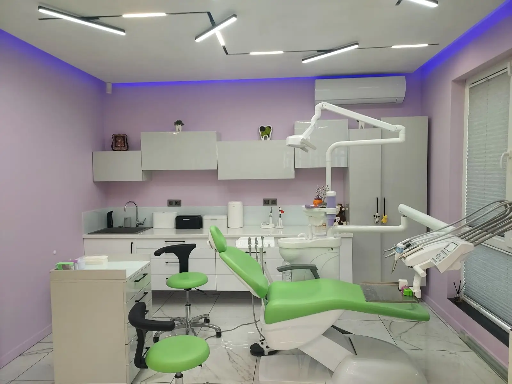
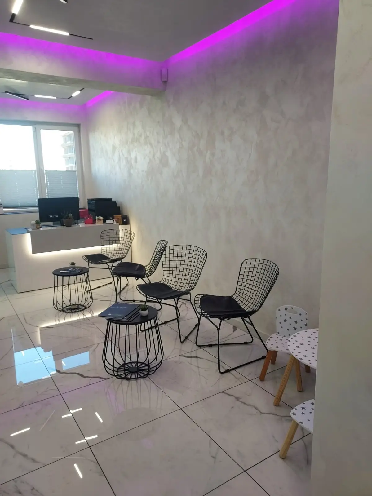
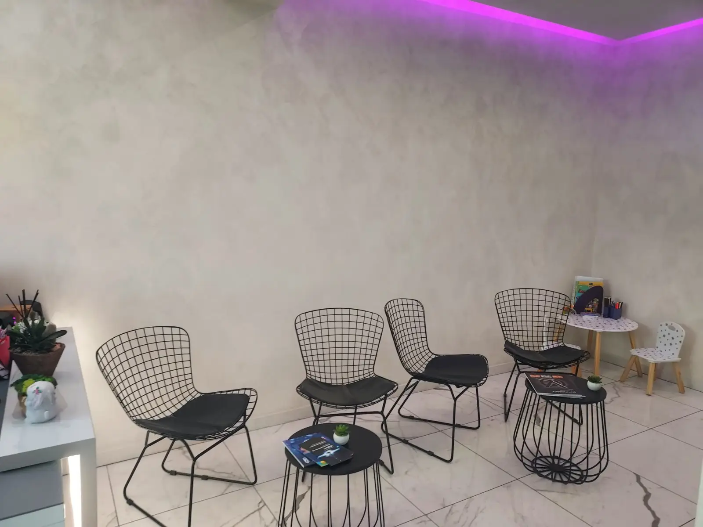
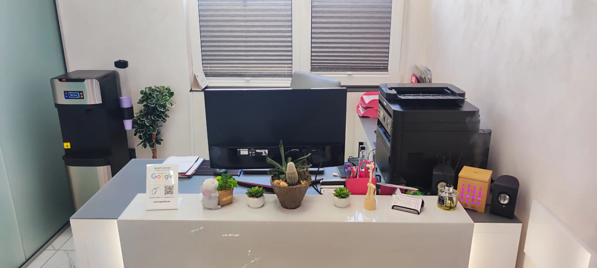
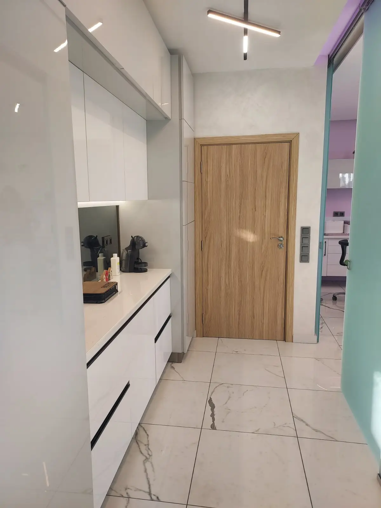
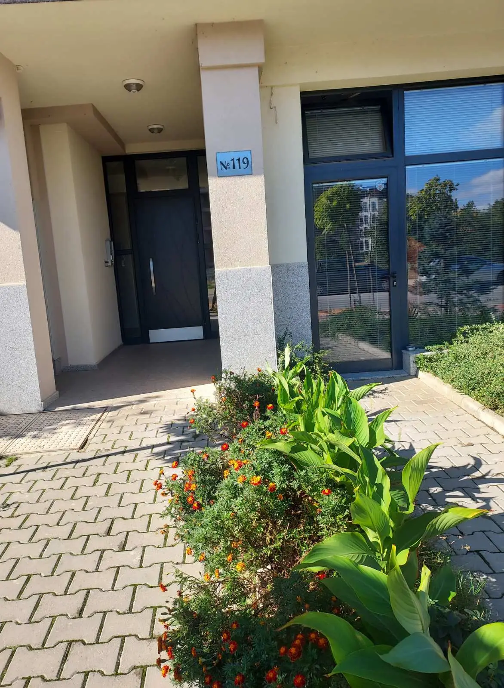
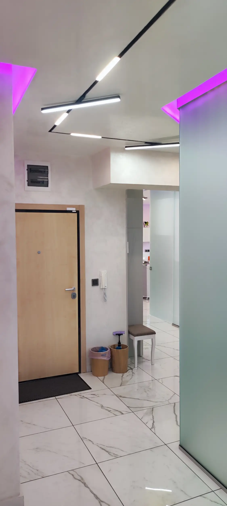
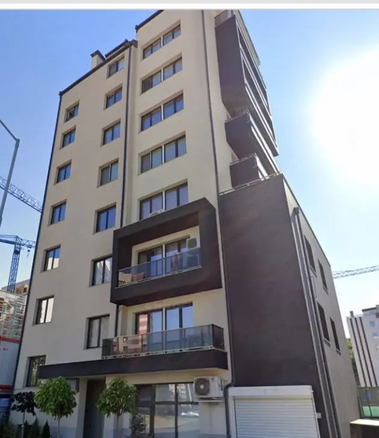
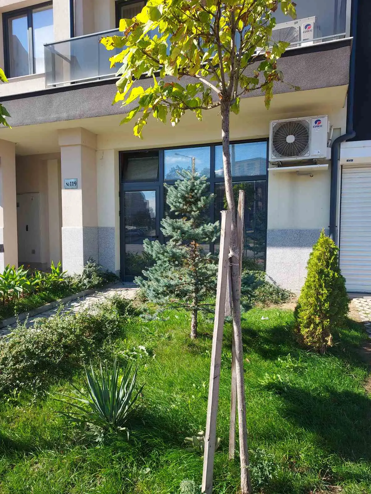

Подход към деца
В отзивите родителите често описват спокойна атмосфера и деца, които ходят без притеснение.
Дружба 2 · ул. Обиколна 119
SmileLand е дентален кабинет на д-р Михайлова и д-р Манова. Подходящ е за семейства, които търсят внимателно отношение към деца и ясен план за ортодонтско или дентално лечение.

Какво е важно тук
В отзивите родителите често описват спокойна атмосфера и деца, които ходят без притеснение.
Профилът в Google Maps посочва SmileLand като ортодонтски кабинет в Дружба 2.
Записването е най-сигурно по телефона: 087 989 0504.
Кабинетът
SmileLand е на ул. „Обиколна“ 119 в ж.к. Дружба 2. Още преди посещението може да видите как изглеждат кабинетът, рецепцията и входът.





Услуги
Първи контакт, профилактика и насоки за следващите стъпки.
Консултация при подреждане на зъби и нужда от ортодонтски план.
Преглед и лечение според конкретния проблем.
Кабинет в Дружба 2, удобен за родители и деца от района.



Отзиви от Google
„С удоволствие бих искала да споделя впечатленията си от Smileland , който посещават и двете ми деца. Атмосферата там е невероятно спокойна и приветлива, което ги кара да ходят с усмивка и без никакви притеснения.“
Ива Михайлова„Здравейте! Аз съм Ива Иванова. Пациент съм на доктор Михайлова. Тя е изключителен професионалист. Бих я препоръчала на всеки. 😁🦷🪥“
Иванка Пенева„Д-р Михайлова е най-добрият стоматолог/ортодонт! От момента, в който се запознахме с нея, посещенията в зъболекарския кабинет се превърнаха в удоволствие!“
Даниела ЗелямоваРаботно време
Google Maps показва понеделник 9:00–17:00. За останалите дни най-сигурно е да се обадите преди посещение.
Адрес
SmileLand дентално здраве и ортодонтия се намира в ж.к. Дружба 2, ул. „Обиколна“ 119, 1784 София. Телефон: 087 989 0504.